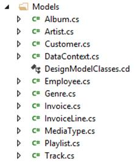
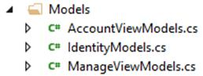
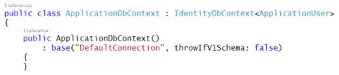
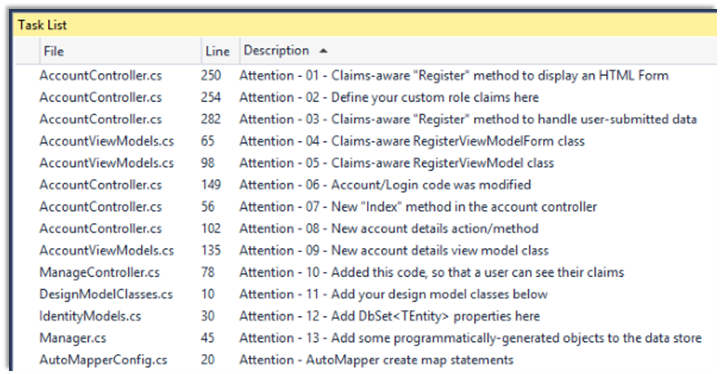
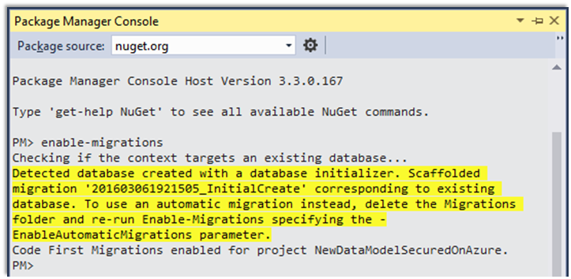
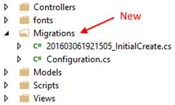

INT422 - Lecture 8 : Part 1
Design and create our own domain and design model, and its database. Security regarding class design and code workflows.
Test today
Test 7 is today, at the beginning of the timeslot, and will run approximately 18 minutes.
Textbook coverage
As previously announced, the textbook will have a supporting role as you learn new topics from these notes and your classroom sessions. Use the table-of-contents and the index to locate the topic, and then read about it there. A reminder: The textbook does not use view model classes in its discussions and code examples. We do.
Code example
Custom Data Model, Secured, Car Business
Theme for this week and next
Before study week, we introduced security topics for ASP.NET MVC web apps.
While studying the topic, we learned that the Visual Studio project template with security included the persistent storage components. It included a data context class, and we learned that its database had the data tables needed to implement security for a web app.
Today, and next week, we will build upon this knowledge, to learn about and use these topics:
- Design and create our own data model
- Loading the model with some initial or starter data
- Making design changes to the model
- Publishing the web app to a public host
While learning and using these topics, we will use secure coding techniques to protect some of the controller actions/methods.
Checkpoint: Your current knowledge about models and data
Before we cover the new topics, let’s pause at this checkpoint, and briefly review your current knowledge about data models, and data persistence.
Weeks 2, 3, 4, 5, and 6
During these weeks, we used the Chinook sample database (customer, employee, invoice, track, album, etc.). This sample database was included in the new-project template that was provided by your teacher team.
{kind=link}
In the Models folder, you saw source code files that defined the classes for real-world entities/objects, and their associations with other objects. It was explained that a Visual Studio code generator created those classes by examining the structure of an existing database (Chinook). The take-away was that the app’s design model classes are defined in the Models folder.

Also in the Models folder, you saw a source code file that defined the data context, which is the app’s gateway to the persistent store (database). It included DbSet<TEntity> collection property definitions for each entity in the design model. These properties could then be used by the Manager class methods, to perform typical data service tasks (fetch, add, edit, and delete).

Week 7
In week 7, we were introduced to security topics. We created new projects that used the built-in Visual Studio new-project template, configured to use “Individual User Accounts” security.
In the Models folder, you noticed that the source code files, and classes, were a bit different than before.
First, there were no design model classes. That is by design. Visual Studio creates a new web app with the foundational components, and expects that you will add your own data model.

Next, you saw that the data context class was located in an IdentityModels.cs source code file. That too is by design. A web app with security needs the foundational components needed for identity management, authentication, and authorization. This source code file configures some of these components, including the data context.

We’ll use this template for a few weeks, by itself (in a file > new > project scenario), or as part of a new project template provided by your teacher team.
Back to basics – persistent storage in an ASP.NET MVC web app
In an ASP.NET MVC web app, persistent storage for the data model is provided by Entity Framework technologies.
Before continuing, review the week 2 lecture notes page, which introduced:
- Persistent data storage, in a database
- Facade service, Entity Framework
- Design model classes
Since then, you have created web apps that included those components as part of the new-project template.
Can you create and configure these components yourself?
Yes.
Do you need to?
No. Not for web apps that you create in this course.
However, if you’re interested in creating your own persistence layer…
If you’re interested in creating your own persistence layer, this section lists the tasks that must be done.
- Using the NuGet Package Manager Console, install-package entityframework
- While you are still using the console, install-package automapper
- Add a connection string to the web app’s Web.config source code file
- Write one or more design model classes
- Write a data context class (that inherits from DbContext), and add DbSet<TEntity> properties for the design model classes that will be persisted
- Add a “manager” class that will handle data service tasks for the app
If you do all these steps correctly, you will have a project that looks similar to one that uses one of the new-project templates that were created by your teacher team.
Moving on… understanding the new-project template that includes authentication
As noted above, a new project with security has source code files, and classes, that were a bit different from those you worked with earlier in the course:
- There were no design model classes
- The data context class was located in an IdentityModels.cs source code file
This kind of project is ready for your own domain data model. All we have to do is add these pieces:
- Using the NuGet Package Manager Console, install-package automapper
- Write one or more design model classes
- In the data context class, add DbSet<TEntity> collection properties for the design model classes
- Add a “manager” class that will handle data service tasks for the app
This is still a lot of work. The teacher team has created another template that captures this work.
Understanding the new “Web app project v2” template
This new template includes starter code for the items above. You must do tasks 2 and 3, and obviously task 4.
Download it, and add it to your computer’s folder that holds new-project templates.
Create a new throw-away project, based on the new template. Build/compile, and then run the web app.
When the web app loads, its front page tells you to complete these two important tasks:
- Customize the role claims
- Write the design model classes
A full tour of the web app’s features are highlighted on the Task List. Open it to view the list of “Attention” comment tokens.

If you run the “Register” action, you will notice that the form includes generic or placeholder names for the role claims. Click the image to open it full-size in a new tab/window.
Notes: the Roles, e.g. RoleOne, RoleTwo, RoleThree, will not show up on the page until you load these roles in the persistent storage.
In the project template, they are defined in the GET form-building Register() method in the account controller:
// Define your custom role claims here
// However, in a real-world in-production app, you would likely maintain
// a valid list of custom claims in persistent storage somewhere
Manager m = new Manager();
var roles = m.RoleClaimGetAllStrings();
// Define a register form
var form = new RegisterViewModelForm();
form.RoleList = new MultiSelectList(roles);
// Send it to the view
return View(form);
As it states in the code comments, in a real-world in-production app, you would likely maintain a valid list of custom claims in persistent storage. The general approach is to define an entity set, RoleClaim, in your design model, and use it as a “lookup table”.
Let’s look at task 2 (write one or more design model classes) in more detail now.
New topic – defining and creating a new persistent store (i.e. database)
For the next few sections, open and study the CustomStoreForCarBusiness code example.
In the DesignModelClasses.cs source code file, write classes for your domain objects.
Assume that our problem domain is the familiar car business. It has classes for Country, Manufacturer, and Vehicle. A country has zero or more manufacturers. A manufacturer has a collection of vehicles. A vehicle is associated with one manufacturer.
Remember these rules – conventions – when writing design model classes:
- To ease other coding tasks, the name of the integer identifier property should be “Id”
- Collection properties (including navigation properties) must be of type ICollection<T>
- Valid data annotations are pretty much limited to [Required] and [StringLength(n)]
- When defining an association between two classes, navigation properties MUST be configured in both classes
- Required to-one navigation properties must include the [Required] attribute
- Do NOT configure scalar properties (e.g. int, double) with the [Required] attribute
- Initialize DateTime and collection properties in a default constructor
Following these rules/conventions will ensure that the database is initialized and configured correctly, and will improve the quality of other coding tasks as you build the app.
❝ Special note:
A few weeks ago, we wrote that you must NOT use the “virtual” keyword when defining navigation properties in your design model classes. This is a reminder.
(If you are interested in the reason, “virtual” partly enables a feature – lazy loading – that we do not and must not use in web apps. By default, our web apps deactivates that feature. Adding “virtual” in this situation is both wrong and useless.)
After you write your design model classes, you should create/complete a class diagram. It’s an easy thing to do, and it will give you a visual way to verify that you have coded the design model classes correctly.
After completing the design model classes, add DbSet<TEntity> properties to the IdentityModels.cs source code file.
Database creation – when? how?
When does the database actually get created by the database engine?
Recall that the data context class is the “gateway” to the persistent data store.
By convention, during the lifetime of an app, the first time a database is accessed – read or written – the data context calls a “database initializer”. By default, the specific kind of database initializer that is called will create the database if it does not yet exist. (If the database does exist, then the database initializer will see that, and complete/exit/return without making any changes.)
New topic – adding new objects to the persistent store
After defining a data store, we can programmatically add new objects.
How? There are several ways. In the ASP.NET and MSDN documentation, the “initializer” strategy is discussed, demonstrated, and recommended. It is a convention-based strategy, that uses a Seed() method to “seed” the data store with new objects. We have used this in past versions of this course.
For this course, we will use a new strategy, which is a bit simpler to understand, and is compatible with a future “bulk data load” topic.
The strategy is to code one or more Manager class methods that “load” programmatically-generated objects into the data store. The “…V2” project template includes one method example, that you can edit and use:
public bool LoadData()
{
// Return if there's existing data
//if (ds.Your_Entity_Set.Count() > 0) { return false; }
// Otherwise...
// Create and add objects
// Save changes
return true;
}
Then, we create a special-purpose (or throw-away) “LoadData” controller that calls into the Manager methods. As the programmer, you can choose whether to “protect” the controller (and its methods) with an Authorize attribute. You can also choose to keep or delete the “LoadData” controller after it has done its job.
In summary, the strategy includes:
- Add one or more Manager methods that add programmatically-generated objects into the data store
- Create a special-purpose controller that calls into the Manager method(s)
- Run the controller action(s)/method(s)
New topic – making changes to the design of the persistent store
After an app has been running for a few hours/days, how do you handle a situation where you need to add another entity class to a design model?
Or, add a property to a design model class?
Or, change a property’s configuration?
This can be done if you activate a feature named (Code First) Migrations. Its biggest benefit is that it will attempt to keep your existing data after minor changes to the design model and database. (Another benefit, discussed later, is that the feature enables us to publish our web app to a public host).
Please note that changes to an existing property’s configuration will work correctly for data transformations/conversions that are implicit. These “widening” transformations/conversions will work without any additional code or data preparation. For our changes, let’s attempt to ensure that our changes are implicit in nature.
Configuring Migrations
Configuring Migrations requires two simple tasks:
- Enable migrations
- After a change (or set of changes), add a “migration” definition, and update the data store.
The first task is to enable Migrations. In Visual Studio, open the Package Manager Console.
Type the following command. It’s a once-per-project command. After you do this, you will not have to do it again for the current project:
|
PM> enable-migrations |
This command configures the base or start state of your the design model classes, and its persistent store implementation. The following is a typical result from running the “enable-migrations” command:

After running the command, look in Solution Explorer. Notice the new “Migrations” folder, and two source code files:

The classes in these source code files are used by the Entity Framework data migrator process, and by the Microsoft Azure services publishing process. Typically, we do not edit these classes.
If you have existing data, and have not made a change to your design model classes, then you can skip the second task below. Read the package manager console messages carefully – it will tell you the status.
Later, whenever you have made a change to your design model classes, do the second task, by executing the following two commands in the Package Manager Console:
PM> add-migration descriptive_name_for_the_change
PM> update-database
In a new (or almost new) project, the descriptive name for your first migration definition can be “Initial” or something similar.
If you anticipate performing many changes, then you can do the add-migration and update-database in a granular way. Or, you could just do all your changes, and run these commands once.
❝ Please note:
Working with migrations is typically a simple task. Do not add complexity. Do not try to make it more complicated than it is. Follow the guidance above.
There’s some reference information that you could read/skim, to learn more about the technology:
Introduction and overview – Code First Migrations
Migrations commands – Entity Framework Code First Migrations Command Reference
What can you do if you run into trouble while using/configuring migrations? Try this, before contacting your teacher:
1. In Visual Studio Solution Explorer, delete the Migrations folder.
2. Do the first task described above – enable-migrations – which will re-write/re-create the migration code.
What can you do if the design model has changes that are not minor?
If the data transformation/conversion is “narrowing” in nature, which could cause loss of data or precision, then you must inspect and/or prepare the data before and after the property configuration change.
For example, if you plan to add a [StringLength(200)] attribute to a string property that did not have such an attribute already, it is possible that some objects in the data store will have property values that exceed 200 characters in length. Before editing the property configuration, you must locate, and potentially edit/truncate, the existing data, so that the property configuration change will succeed.
Or, if you plan to convert a double property into an integer property, it is possible that some existing objects will have real numbers (with a decimal portion) in the property value. Before editing the property configuration, you must locate and edit the existing data.
See this MSDN article for more information about data conversions.
An alternative strategy, which works for existing in-production apps, would involve several tasks:
- Add a new property, which will hold the destination value
- As a special task, go through all objects in the entity set, and use data from the existing property to populate the desired value in the new property
- If you want to start using the new property in your manager and controller code, go ahead
- Alternatively, you could delete the old property, add it back again with the desired data type, go through all the objects in the entity set to copy from the property added in step 1 above, to the just-added-again property, and then finally, delete the property added in step 1 above
Real-world in-production handling of database changes
Incidentally, are the change-handling strategies above strong enough for real-world in-production use?
No, not really.
Real-world in-production apps tend to separate the persistence layer from the application. This is a technique that we may get an opportunity to learn, near the end of the course.
To preview the technique, we create a “class library” project that defines and hosts the design model classes and data context. This action creates a “persistence layer” (aka “data layer” in some documentation sets). Then, in a web app project, we “add a reference” to the persistence layer, so that our Manager class can work with the data.
If and when we need changes to the database, then we use traditional database administration tools to perform the modifications. In the persistence layer project, we modify its code to match the new reality in the persistence layer.